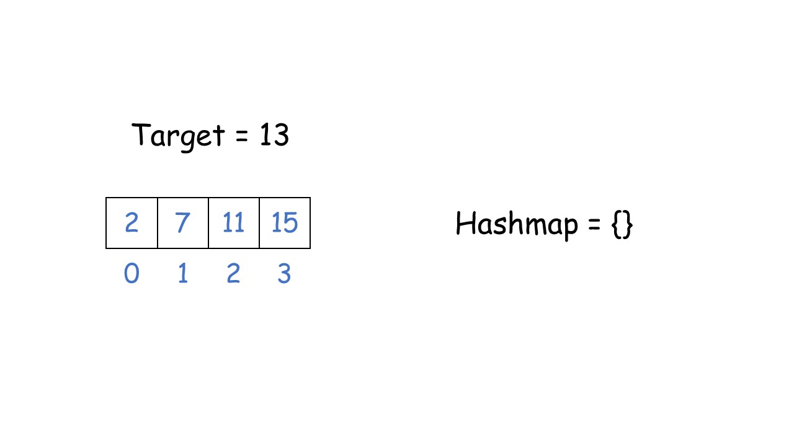
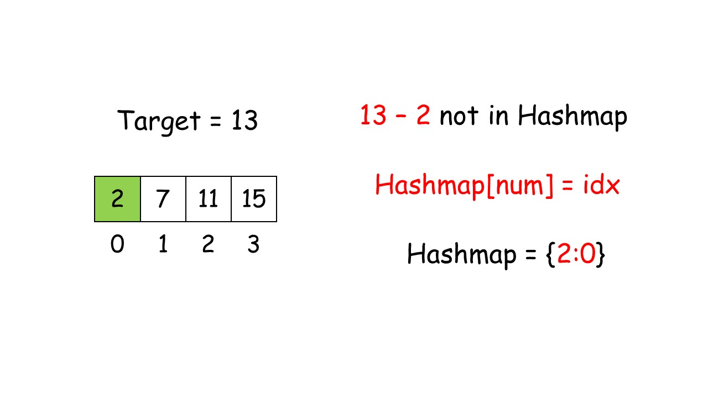
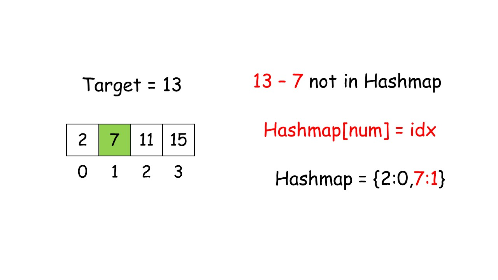
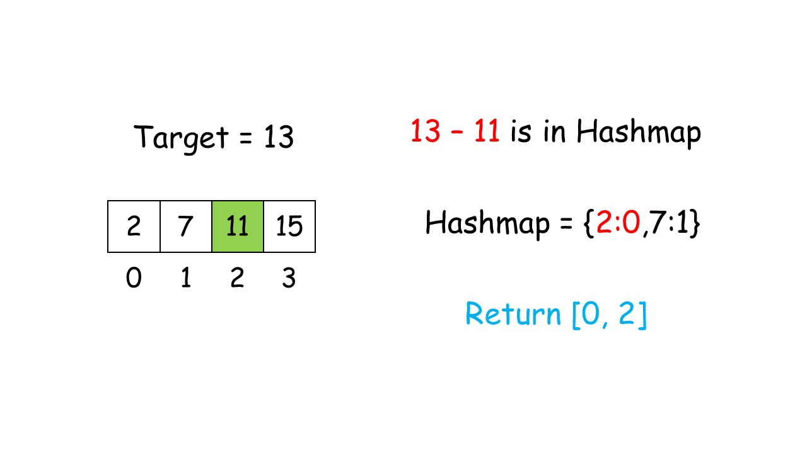

1.1 二分查找的原理
1、从列表中间开始比对
如果列表中间的项匹配查找项，则查找结束
如果不匹配，有下面两种情况
- 列表中间项比查找项大，那么查找项只可能出现在前半部分
- 列表中间项比查找项小，那么查找项只可能出现在后半部分
无论如何，我们都会将比对范围缩小到原来的一般: n/2
2、继续采用上面的方法查找
- 每次都会将比对范围缩小一半
1.2 循环处理法
def binarySearch(alist, item): first = 0 last = len(alist) - 1 found = False while first <= last and not found: midpoint = (first + last) // 2 if alist[midpoint] == item: found = True else: if alist[midpoint] > item: last = midpoint - 1 else: first = midpoint + 1 return foundtestlist = [0,1,2,8,13,17,19,32,42,]print(binarySearch(testlist,3)) # Falseprint(binarySearch(testlist,13)) # True1.3 递归处理法
def binarySearch(alist,item): if len(alist) == 0: return False else: midpoint = len(alist) // 2 if alist[midpoint] == item: return True else: if alist[midpoint] > item: return binarySearch(alist[:midpoint],item) else: return binarySearch(alist[midpoint+1:],item)testlist = [0,1,2,8,13,17,19,32,42,]print(binarySearch(testlist,3)) # Falseprint(binarySearch(testlist,13)) # True1.4 算法分析
1.由于二分查找，每次比对都将下一步的比对范围缩小一半
2.每次比对后剩余数据项如下表所示
比对次数 查找后的剩余数据 1 n/2 2 n/4 3 n/8 ... ... i 3.当比对次数足够多以后，比对范围就会仅剩余一个数据项
4.无论这个数据项是否匹配查找项，比对最终都会结束，解下面的方程:
5.得到结果:
6.所以二分查找的算法负责度是:
1.5 总结
- 二分查找算法实际上体现了解决问题的典型策略：分而治之
- 将问题分为若干个更小规模的部分
- 通过解决每一个小规模部分问题，并将结果汇总得到原问题的解
2.1 原理解析
- 冒泡排序的原理
- 在于对无序表进行多趟交换
- 每趟包括了多次两两相邻比较，并将逆序的数据项互换位置，最终能将本趟的最大项就位
- 经过n-1趟比较交换，实现整表排序，因为最后一趟肯定是最小的一个数排到最前面不用比较了，所以就是n-1趟
- 每趟的过程类似于"气泡"在水中不断上升浮到水面的经过
2.冒泡排序过程
第1趟比较交换，共有n-1对相邻数据进行比较
- 一旦经过最大项，则最大项会一路交换到达最后一项
第2趟比较交换时，最大项已就位，需要排序的数据就减少为n-1，共有n-2对相邻数据进行比较
直到第n-1趟完成以后，最小项一定在列表首位，就不用处理了，所以是n-1趟
2.2 代码
------------------------------第一种解法-----------------------------------------------def bubble_sort(alist): alist_len = len(alist) for passnum in range(alist_len-1,0,-1): for i in range(passnum): if alist[i] > alist[i+1]: alist[i],alist[i+1] = alist[i+1],alist[i] return alisttestlist = [41,63,22,1,4,0,99,233]print(bubble_sort(testlist))# output:[0, 1, 4, 22, 41, 63, 99, 233]-------------------------- 第二种解法---------------------------------------------------import randomdef bubble_sort(alist): n = len(alist) for i in range(n-1): # 这个循环负责设置冒泡排序进行的次数（比如说n个数，则只要进行n-1次冒泡，就可以把这个n个数排序好) for j in range(n-i-1): ''' 这里这个j呢就是控制每一次具体的冒泡过程，请你想一想，我们第一次冒泡需要冒几次，也就是说需要比较几次， 假如有三个数，那只需要两次就可以了，当下一次时，最后一个 已经是有序的了，所以说少冒泡一次，所以这里j每次都会减去i的值，即不用冒“无用之泡泡” ''' if alist[j] > alist[j+1]: alist[j],alist[j+1] = alist[j+1],alist[j]s = list(range(8))random.shuffle(s)print(f"before:{s}")bubble_sort(s)print(f"after bubble_sort:{s}")2.3 算法分析
1.无序表初始数据项的排列状况对冒泡排序没有影响
2.算法过程总需要n-1趟，随着趟数的增加，比对次数逐步从n-1减少到1，并包括可能发生的数据项交换
3.比对次数是1~n-1的累加：
4.比对的时间复杂度是
5.关于交换的次数，时间复杂度也是O(n^2),通常每次交换包括三次赋值
6.最好的情况是:列表在排序浅已经有序，交换次数为0
7.最差的情况是:每次比对都要进行交换，交换的次数等于比对次数
8.平均的情况是:最差情况的一半
9.效率差的原因:在每个数据项在找到其最终位置之前，必须要经过多次比对和交换，其中大部分操作是无效的
10.有一点优势:无需额外的空间开销
2.4 性能改进
1.通过监测每趟比对收发生过交换，可以提前确定排序是否完成
2.如果某趟比对没有发生任何交换，说明列表已经排好序，可以提前结束算法
3.但是并不能改变时间复杂度
2.5 性能改进代码示例
def bubble_sort(alist): passnum = len(alist) - 1 exchanges = True while passnum > 0 and exchanges: exchanges = False for i in range(passnum): if alist[i] > alist[i + 1]: exchanges = True alist[i], alist[i + 1] = alist[i + 1], alist[i] passnum -= 1 return alisttestlist = [41,63,22,1,4,0,99,233]print(bubble_sort(testlist))output:[0, 1, 4, 22, 41, 63, 99, 233]
给定一个整数数组 nums 和一个目标值 target，请你在该数组中找出和为目标值的那 两个 整数，并返回他们的数组下标。
你可以假设每种输入只会对应一个答案。但是，数组中同一个元素不能使用两遍。
示例:
给定 nums = [2, 7, 11, 15], target = 9
因为 nums[0] + nums[1] = 2 + 7 = 9 所以返回 [0, 1]
思路：




1.1.1 代码-两个for循环
# 两个for循环# for循环嵌套执行顺序：如果一个for循环里还有一个for循环，如果条件不满足，那么里面的for循环会先执行完，外面的for循环才会执行def twosum(alist,target): num = len(alist) for i in range(num): # 外层循环先取出下标0，对应着数组里的第一个数字 for j in range(i+1,num): # 内层循环取出下标1，对应着数组里的第二个数字 if alist[i] + alist[j] == target: print(f"{i},{j}") break else: continuet = [2,7,4,3]twosum(t,9) # 0,11.1.2 使用字典和enumerate（枚举出序列的值和索引值）
enumerate:枚举出序列的索引值和元素
# 两数之和def twosum(alist,target): dict = {} for index,ele in enumerate(alist): last_num = target - ele if last_num in dict: return dict[last_num],index else: dict[ele] = indext = [2,7,4,3]print(twosum(t,9))# 第一趟:# dict = {}# index = 0，ele = 2# last_num = target - lele=> 7 = 9 -2# 7不在dict中，所以走else逻辑，将当前的 index 和ele存入dict中，即： dict = {2:0}# 第二趟:# dict = {2:0}# index = 1，ele = 7# last_num = target - lele => 2 = 9 - 7# 2在dict中，所以走if逻辑，将返回dict中last_num的value和当前循环的index值，即：0,1，至此已经找到了两数之和的位置给出一个 32 位的有符号整数，你需要将这个整数中每位上的数字进行反转。
示例 1:
输入: 123 输出: 321 示例 2:
输入: -123 输出: -321 示例 3:
输入: 120 输出: 21 注意:
假设我们的环境只能存储得下 32 位的有符号整数，则其数值范围为 [−231, 231 − 1]。请根据这个假设，如果反转后整数溢出那么就返回 0。